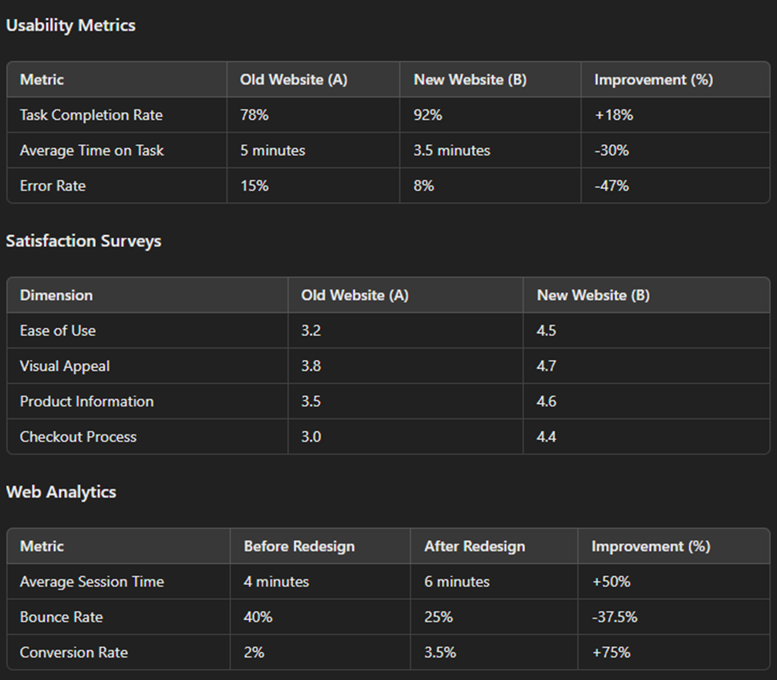
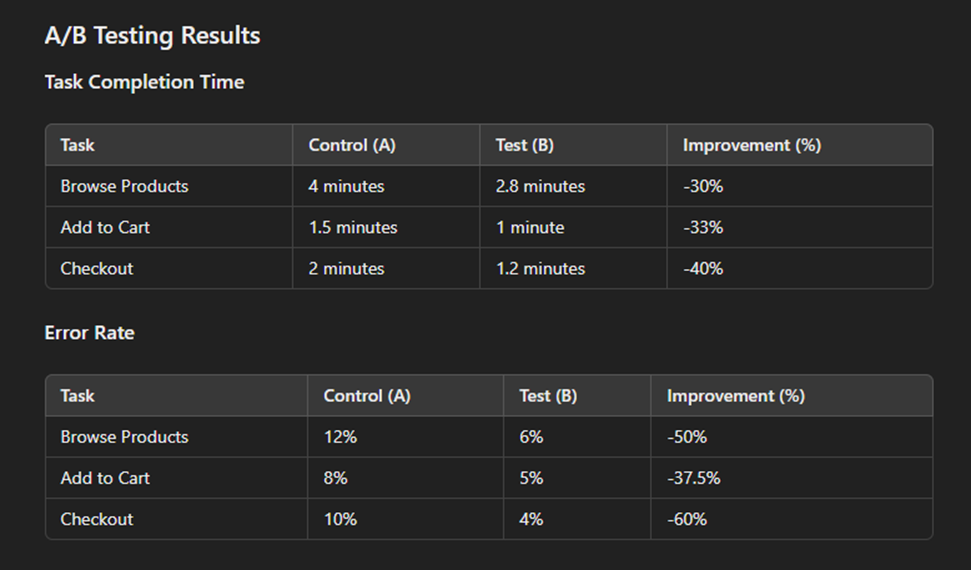
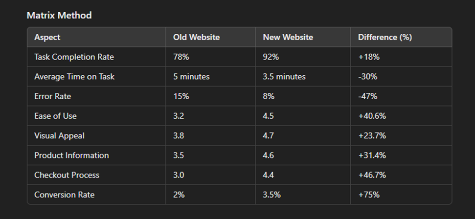

Usability Case Study for a Re-designed Clothing Website:-
Overview
The objective of this case study is to assess the usability of a re-designed clothing website using both
qualitative and quantitative analysis methods. The study aims to identify user satisfaction, ease of navigation,
and overall performance of the website. We will use a combination of surveys, interviews, and A/B testing to
gather data and present the findings with statistics and a matrix method.
Study Design
1 Qualitative Analysis
* User Interviews: Conduct in-depth interviews with 20 participants to
gather insights on their experience with the website.
* Focus Groups: Organize 3 focus groups, each consisting of 5-8
participants, to discuss their perceptions and usability issues.
* Open-ended Surveys: Distribute surveys with open-ended questions to
capture detailed feedback on specific aspects of the website.
2 Quantitative Analysis
* Usability Metrics: Collect data on task completion rates, time on
task,
and error rates.
* Satisfaction Surveys: Use Likert scale surveys (1 to 5) to measure
user
satisfaction across various dimensions such as ease of use, visual appeal, and functionality.
* Web Analytics: Analyze website traffic, bounce rates, and conversion
rates before and after the redesign.
3 A/B Testing
* Control Groups(A): Participants using the old version of the website.
* Test Group(B): Participants using the re-designed version of the
website.
* Key Metrics: Compare task completion times, error rates, and user
satisfaction scores between the two groups.
Data Collection and Analysis:-
Qualitative Analysis:-
User Interviews And Focus Groups
* Product Information Clarity
* Users found the new navigation bar more intuitive.
* Some participants mentioned that product images are clearer and more appealing in the redesigned version.
* Several users reported that the checkout process is faster and less confusing.
Quantitative Analysis:-


Findings Presentation:-
Statistics Summary.
* Overall Improvement: The redesigned website showed significant
improvements in all measured aspects.
* User Satisfaction: ncreased across all dimensions, especially in ease
of use and checkout process.
website.
* Performance Metrics: Reduced task completion times and error rates
substantially.

Conclusion:-
The re-designed clothing website has demonstrated substantial improvements in usability, user satisfaction, and
overall performance. The combination of qualitative and quantitative methods provided a comprehensive
understanding of user needs and preferences, while A/B testing validated the effectiveness of the redesign. These
findings suggest that the re-designed website offers a significantly better user experience, leading to higher
engagement and conversion rates.